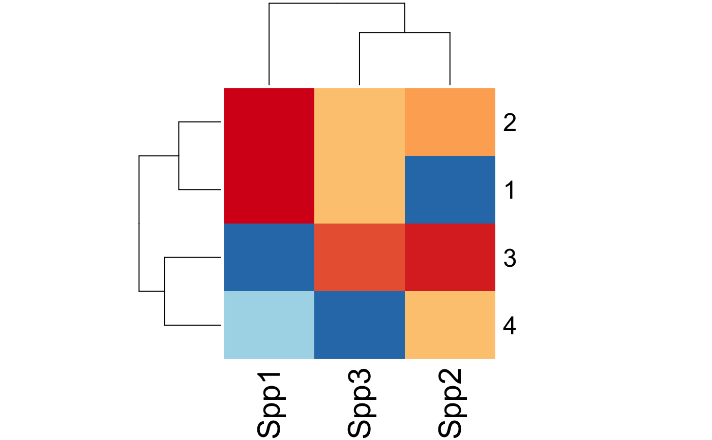

uncertainty.RdQuantifying uncertainty for fitted objects.
uncertainty(object, ...) # S3 method for opticut uncertainty(object, which = NULL, type = c("asymp", "boot", "multi"), B = 99, cl = NULL, ...) # S3 method for multicut uncertainty(object, which = NULL, type = c("asymp", "boot"), B = 99, cl = NULL, ...) check_strata(x, mat) # S3 method for uncertainty strata(object, ...) # S3 method for uncertainty subset(x, subset=NULL, ...) # S3 method for uncertainty bestpart(object, ...) # S3 method for uncertainty1 bestpart(object, ...) # S3 method for uncertainty1 print(x, ...) # S3 method for uncertainty print(x, ...) # S3 method for summary.uncertainty print(x, sort, digits, ...) # S3 method for uncertainty summary(object, level = 0.95, ...) # S3 method for uncertainty as.data.frame(x, row.names = NULL, optional = FALSE, sort, ...) # S3 method for summary.uncertainty as.data.frame(x, row.names = NULL, optional = FALSE, sort, ...) # S3 method for uncertainty1 bsmooth(object, ...) # S3 method for uncertainty bsmooth(object, ...)
| object | fitted model object
(which should not contain extra arguments as part of |
|---|---|
| which | numeric or character (can be a vector) defining
a subset of species from the fitted object,
or or |
| type | character, describing the type of uncertainty calculation. See Details. |
| B | numeric, number of iterations. For |
| cl | a cluster object, or an integer for multiple cores in parallel computations (integer value for forking is ignored on Windows). |
| x | an object to be printed. |
| level | the confidence level required. |
| sort | logical value indicating if species
should be meaningfully sorted, the default is |
| digits | numeric, number of significant digits in output. |
| mat | a matrix with resampling indices (rows as samples, columns as iterations). |
| row.names |
|
| optional | logical. If |
| subset | logical, numeric, or character index indicating species to keep, missing values are not accepted. |
| ... | other arguments passed to the underlying functions. |
Uncertainty is calculated for
indicator potential I, and expected values
(mu0, and mu1 for opticut, and mu_* for multicut objects).
"asymp": asymptotic distribution is based on best supported model
(this option is unavailable for custom distribution functions because
it requires the Hessian matrix).
This type is available for both opticut and multicut objects.
"boot": non-parametric bootstrap distribution
based on best partition found for the input object.
This type is available for both opticut and multicut objects.
"multi": non-parametric bootstrap distribution
based on best partition found for the bootstrap data (i.e.
the model ranking is re-evaluated each time).
"multi" works only if comb = "rank" in the
opticut call.
This type is not available for multicut objects.
uncertainty returns an object of class 'uncertainty'.
The uncertainty element of the object is a list with species specific
output as elements (object class 'uncertainty1').
Each 'uncertainty1' output is a data frame with columns:
best partition, indicator potential I,
and expected values
(mu0, and mu1 for opticut, and mu_* for multicut objects).
check_strata returns a logical vector checking if
all original strata from the input object are represented
by resampling indices. Number of strata are attached as attributes
for further diagnostics.
The summary method prints the name of the best supported split,
selection frequency (R, reliability), indicator values (I, based on
the distribution of values within the best supported split with highest
reliability) and confidence interval for I (based on level).
The subset method subsets the species in the uncertainty object.
bestpart finds the selection frequencies for
strata as best partitions (number of strata x number of species).
The coercion method as.data.frame returns a data frame.
The bsmooth method returns bootstrap smoothed results
for each strata (not available for multicut based uncertainty objects,
check uncertainty results instead).
Resampling methods can lead to complete exclusion of certain strata
when sample size is small. Try revising the stratification of the
input object, or provide custom resampling indices via the B
argument using stratified (block) bootstrap, jackknife (leave-one-out),
or similar techniques. Finding a suitable random seed
via set.seed or dropping unsuitable iterations
can also resolve the issue.
set.seed(2345) n <- 50 x0 <- sample(1:4, n, TRUE) x1 <- ifelse(x0 %in% 1:2, 1, 0) x2 <- rnorm(n, 0.5, 1) x3 <- ifelse(x0 %in% 2:4, 1, 0) lam1 <- exp(0.5 + 1*x1 + -0.2*x2) Y1 <- rpois(n, lam1) lam2 <- exp(1 + 0.5*x3) Y2 <- rpois(n, lam2) Y3 <- rpois(n, exp(0)) Y <- cbind(Spp1=Y1, Spp2=Y2, Spp3=Y3) oc <- opticut(Y ~ x2, strata=x0, dist="poisson", comb="rank") ## asymptotic confidence intervals (uc1 <- uncertainty(oc, type="asymp", B=999))#> Multivariate multicut uncertainty results, type = asymp, B = 999 #>summary(uc1)#> Multivariate multicut uncertainty results #> type = asymp, B = 999, level = 0.95 #> #> split R I Lower Upper #> Spp1 1+2 1 0.3746 0.204220 0.5118 #> Spp3 1+2+3 1 0.3438 0.016874 0.6984 #> Spp2 2+3+4 1 0.1369 0.008863 0.2939## bootstrap-based confidence intervals (uc2 <- uncertainty(oc, type="boot", B=19))#> Multivariate multicut uncertainty results, type = boot, B = 19 #>summary(uc2)#> Multivariate multicut uncertainty results #> type = boot, B = 19, level = 0.95 #> #> split R I Lower Upper #> Spp1 1+2 1 0.3688 0.266965 0.4710 #> Spp3 1+2+3 1 0.3689 0.023399 0.8796 #> Spp2 2+3+4 1 0.1354 0.003183 0.2706## use user-supplied indices ## multi-model bootstrap based uncertainties B <- replicate(25, sample.int(n, replace=TRUE)) check_strata(oc, B) # check representation#> [1] TRUE TRUE TRUE TRUE TRUE TRUE TRUE TRUE TRUE TRUE TRUE TRUE TRUE TRUE TRUE #> [16] TRUE TRUE TRUE TRUE TRUE TRUE TRUE TRUE TRUE TRUE #> attr(,"nx") #> [1] 4 #> attr(,"nmat") #> [1] 4 4 4 4 4 4 4 4 4 4 4 4 4 4 4 4 4 4 4 4 4 4 4 4 4(uc3 <- uncertainty(oc, type="multi", B=B))#> Multivariate multicut uncertainty results, type = multi, B = 25 #>summary(uc3)#> Multivariate multicut uncertainty results #> type = multi, B = 25, level = 0.95 #> #> split R I Lower Upper #> Spp1 1+2 0.7308 0.3980 0.27604 0.552 #> Spp3 1+2+3 0.3846 0.5624 0.21287 1.000 #> Spp2 2+3+4 0.4615 0.1760 0.09648 0.266#> Spp1 Spp2 Spp3 #> 1 1.0000000 0.03846154 0.6538462 #> 2 1.0000000 0.73076923 0.6538462 #> 3 0.0000000 0.92307692 0.8461538 #> 4 0.2692308 0.65384615 0.0000000## bootstrap smoothed predictions per strata bsmooth(uc3)#> Spp1 Spp2 Spp3 #> 1 4.242728 3.413736 0.6399826 #> 2 4.242728 4.330780 0.6884190 #> 3 1.808303 4.583842 0.7642625 #> 4 2.429689 4.188160 0.3545554## individual species results uc3$uncertainty#> $Spp1 #> Univariate multicut uncertainty results, type = multi, B = 25 #> #> best I mu0 mu1 #> 1+2 :19 Min. :0.2675 Min. :1.159 Min. :3.436 #> 1+2+4: 7 1st Qu.:0.3360 1st Qu.:1.502 1st Qu.:3.974 #> Median :0.4088 Median :1.777 Median :4.184 #> Mean :0.4065 Mean :1.808 Mean :4.243 #> 3rd Qu.:0.4719 3rd Qu.:2.108 3rd Qu.:4.405 #> Max. :0.5892 Max. :2.764 Max. :5.502 #> #> $Spp2 #> Univariate multicut uncertainty results, type = multi, B = 25 #> #> best I mu0 mu1 #> 1+3 : 1 Min. :0.0258 Min. :2.312 Min. :3.844 #> 2 : 1 1st Qu.:0.1105 1st Qu.:3.097 1st Qu.:4.400 #> 2+3 : 5 Median :0.1344 Median :3.359 Median :4.659 #> 2+3+4:12 Mean :0.1559 Mean :3.394 Mean :4.627 #> 2+4 : 1 3rd Qu.:0.2209 3rd Qu.:3.724 3rd Qu.:4.944 #> 3 : 2 Max. :0.2813 Max. :4.225 Max. :5.321 #> 3+4 : 4 #> #> $Spp3 #> Univariate multicut uncertainty results, type = multi, B = 25 #> #> best I mu0 mu1 #> 1 : 1 Min. :0.1554 Min. :0.0000 Min. :0.6147 #> 1+2 : 2 1st Qu.:0.2951 1st Qu.:0.2790 1st Qu.:0.6926 #> 1+2+3:10 Median :0.3702 Median :0.3674 Median :0.7865 #> 1+3 : 4 Mean :0.4280 Mean :0.3546 Mean :0.8334 #> 2 : 1 3rd Qu.:0.4884 3rd Qu.:0.4624 3rd Qu.:0.9216 #> 2+3 : 4 Max. :1.0000 Max. :0.6937 Max. :1.7098 #> 3 : 4 #>#> [,1] [,2] [,3] [,4] [,5] [,6] [,7] [,8] [,9] [,10] [,11] [,12] [,13] [,14] #> 1 1 1 1 1 1 1 1 1 1 1 1 1 1 1 #> 2 1 1 1 1 1 1 1 1 1 1 1 1 1 1 #> 3 0 0 0 0 0 0 0 0 0 0 0 0 0 0 #> 4 0 0 0 0 0 0 0 0 0 0 1 0 0 1 #> [,15] [,16] [,17] [,18] [,19] [,20] [,21] [,22] [,23] [,24] [,25] [,26] #> 1 1 1 1 1 1 1 1 1 1 1 1 1 #> 2 1 1 1 1 1 1 1 1 1 1 1 1 #> 3 0 0 0 0 0 0 0 0 0 0 0 0 #> 4 0 1 0 1 0 1 1 0 0 0 1 0bsmooth(uc3$uncertainty[[1]])#> [,1] [,2] [,3] [,4] [,5] [,6] [,7] [,8] #> 1 4.353309 4.123784 4.796411 5.502443 4.966979 3.956581 4.263636 4.066393 #> 2 4.353309 4.123784 4.796411 5.502443 4.966979 3.956581 4.263636 4.066393 #> 3 1.968847 1.752355 2.048311 1.802075 2.764274 1.307073 2.327590 2.026677 #> 4 1.968847 1.752355 2.048311 1.802075 2.764274 1.307073 2.327590 2.026677 #> [,9] [,10] [,11] [,12] [,13] [,14] [,15] [,16] #> 1 4.547626 4.154616 3.436177 4.320181 4.421835 3.510415 4.258540 3.983873 #> 2 4.547626 4.154616 3.436177 4.320181 4.421835 3.510415 4.258540 3.983873 #> 3 2.368197 1.727303 1.399548 2.128446 1.869369 1.312151 1.990268 1.277240 #> 4 2.368197 1.727303 3.436177 2.128446 1.869369 3.510415 1.990268 3.983873 #> [,17] [,18] [,19] [,20] [,21] [,22] [,23] [,24] #> 1 3.906009 3.714836 3.921941 4.242182 4.214182 4.605661 3.970598 4.998947 #> 2 3.906009 3.714836 3.921941 4.242182 4.214182 4.605661 3.970598 4.998947 #> 3 2.251073 2.147011 1.628562 2.208800 1.491471 1.532036 1.559550 1.292377 #> 4 2.251073 3.714836 1.628562 4.242182 4.214182 1.532036 1.559550 1.292377 #> [,25] [,26] #> 1 4.049467 4.024312 #> 2 4.049467 4.024312 #> 3 1.158853 1.676410 #> 4 4.049467 1.676410if (FALSE) { ## block bootstrap block_fun <- function() unlist(lapply(unique(x0), function(z) if (sum(x0==z) < 2) which(x0==z) else sample(which(x0==z), sum(x0==z), replace=TRUE))) B <- replicate(25, block_fun()) check_strata(oc, B) # check representation summary(uncertainty(oc, type="multi", B=B)) ## jackknife B <- sapply(1:n, function(i) which((1:n) != i)) check_strata(oc, B) # check representation summary(uncertainty(oc, type="multi", B=B)) ## multicut based uncertainty mc <- multicut(Y ~ x2, strata=x0, dist="poisson") ## asymptotic confidence intervals (muc1 <- uncertainty(mc, type="asymp", B=999)) summary(muc1) bestpart(muc1) ## bootstrap-based confidence intervals (muc2 <- uncertainty(mc, type="boot", B=19)) summary(muc2) bestpart(muc2) ## dolina example data(dolina) ## stratum as ordinal dolina$samp$stratum <- as.integer(dolina$samp$stratum) ## filter species to speed up things a bit Y <- ifelse(dolina$xtab[,colSums(dolina$xtab > 0) >= 20] > 0, 1, 0) ## opticut results, note the cloglog link function dol <- opticut(Y ~ stratum + lmoist + method, data=dolina$samp, strata=dolina$samp$mhab, dist="binomial:cloglog") ## parallel computing for uncertainty library(parallel) cl <- makeCluster(2) ucdol <- uncertainty(dol, type="multi", B=25, cl=cl) stopCluster(cl) bestpart(ucdol) heatmap(t(bestpart(ucdol)), scale="none", col=occolors()(25), distfun=function(x) dist(x, "manhattan")) ## See how indicator value changes with different partitions ## (and why it is the wrong metric to use in this calse) with(ucdol$uncertainty[["pvic"]], boxplot(I ~ best, col="gold", ylab="Indicator value")) ## What we should calculate is the bootstrap smoothed mean of the ## expected value and its confidence intervals bs <- bsmooth(ucdol$uncertainty[["pvic"]]) boxplot(t(bs), ylab="Expected value") cbind(Mean=rowMeans(bs), t(apply(bs, 1, quantile, probs=c(0.025, 0.975)))) ## A more interesting simulated example for bootstrap smoothing ## and comparing opticut vs. multicut set.seed(1) n <- 2000 x <- sort(runif(n, -8, 8)) p <- plogis(0.5 + -0.1 * x + -0.2 * x^2) y <- rbinom(n, 1, p) d <- diff(range(x))/10 br <- seq(min(x), max(x), by=d) g <- cut(x, br, include.lowest=TRUE) levels(g) <- LETTERS[1:nlevels(g)] o <- opticut(y ~ 1, strata=g, dist="binomial") m <- multicut(y ~ 1, strata=g, dist="binomial") library(parallel) cl <- makeCluster(2) uo <- uncertainty(o, type="multi", B=99, cl=cl) um <- uncertainty(m, type="boot", B=99, cl=cl) stopCluster(cl) ## bootstrap average for opticut bs <- bsmooth(uo$uncertainty[[1]]) stat <- cbind(Mean=rowMeans(bs), t(apply(bs, 1, quantile, probs=c(0.025, 0.975)))) ## bootstrap average for multicut bsm <- as.matrix(um$uncertainty[[1]][,-(1:2)]) statm <- cbind(Mean=colMeans(bsm), t(apply(bsm, 2, quantile, probs=c(0.025, 0.975)))) op <- par(mfrow=c(2,1)) plot(p ~ x, type="l", ylim=c(0,1), main="Binary partitions (opticut)") abline(v=br, col="grey", lty=3) lines(br[-1]-0.5*d, stat[,1], col=4) lines(br[-1]-0.5*d, stat[,2], col=4, lty=2) lines(br[-1]-0.5*d, stat[,3], col=4, lty=2) lines(br[-1]-0.5*d, bs[,1], col=2) legend("topright", bty="n", lty=c(1,1,2,1), col=c(1,4,4,2), legend=c("True response","bsmooth","0.95 CI","Best partition")) plot(p ~ x, type="l", ylim=c(0,1), main="Multi-level model (multicut)") abline(v=br, col="grey", lty=3) lines(br[-1]-0.5*d, statm[,1], col=4) lines(br[-1]-0.5*d, statm[,2], col=4, lty=2) lines(br[-1]-0.5*d, statm[,3], col=4, lty=2) legend("topright", bty="n", lty=c(1,1,2), col=c(1,4,4), legend=c("True response","bsmooth","0.95 CI")) par(op) }